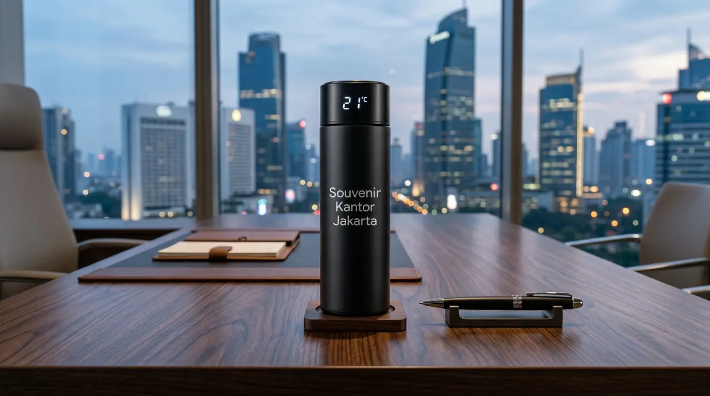

Tumbler Custom Logo untuk Souvenir Perusahaan & Event
 Tim Redaksi Souvenir Kantor Jakarta
27 Agustus 2026
8 Menit Baca
Tim Redaksi Souvenir Kantor Jakarta
27 Agustus 2026
8 Menit Baca
Produk botol minum kustom logo merupakan media cenderamata paling diminati karena memberikan manfaat penggunaan harian secara berkelanjutan di area kerja. Material berbahan stainless steel vacuum tahan panas dan dingin mendominasi pilihan perusahaan karena daya tahan penggunaan yang sangat lama. Metode kustomisasi menggunakan teknik grafir laser menghasilkan ukiran logo permanen yang presisi, elegan, dan tidak gampang memudar. Pengadaan terpusat secara grosir menjamin efisiensi alokasi dana operasional serta kepastian pengiriman untuk tenggat acara perusahaan.
Tumbler custom logo adalah botol minum yang dicetak dengan identitas visual perusahaan untuk kebutuhan souvenir acara, promosi bisnis, dan cenderamata karyawan.
- Mengapa Tumbler Custom Logo Sangat Efektif untuk Souvenir Perusahaan dan Event Bisnis?
- Jenis Material Apa yang Paling Tepat untuk Pembuatan Tumbler Custom Logo?
- Metode Cetak Logo Mana yang Paling Tahan Lama pada Tumbler Perusahaan?
- Kesalahan Apa Saja yang Wajib Dihindari Saat Mengadakan Tumbler Custom Logo?
- Pertanyaan Umum Seputar Tumbler Custom Logo (FAQ)
- Kesimpulan Praktis
Mengapa Tumbler Custom Logo Sangat Efektif untuk Souvenir Perusahaan dan Event Bisnis?
Tumbler custom logo sangat efektif untuk souvenir perusahaan karena menyajikan daya pakai harian tinggi, memperluas jangkauan promosi merek, dan mendukung gaya hidup ramah lingkungan.
Berdasarkan Laporan Industri Merchandise Corporate Indonesia 2025/2026, penggunaan barang promosi yang memiliki fungsi harian menghasilkan skor retensi merek (brand recall) hingga 88% di kalangan penerima. Angka ini membuktikan bahwa cenderamata fungsional jauh lebih berdampak dibandingkan media cetak sekali pakai. Selain itu, gerakan pengurangan sampah plastik tunggal di perkantoran menjadikan tempat minum kustom sebagai pilihan hadiah yang sangat beretika.
Jangkauan Luas
Promosi pasif di berbagai tempatCitra Positif
Mencerminkan profesionalismeEfisiensi Anggaran
Nilai investasi jangka panjangBerikut adalah keunggulan utama memilih produk ini untuk cenderamata instansi Anda:
- Daya Jangkau Merek yang Luas: Penerima yang membawa tempat minum ke ruang rapat, fasilitas olahraga, atau kafe secara tidak langsung mempromosikan instansi Anda.
- Meningkatkan Citra Positif Perusahaan: Membagikan barang berkualitas mencerminkan komitmen instansi terhadap profesionalisme dan apresiasi tinggi pada relasi.
- Efisiensi Anggaran Jangka Panjang: Karena berdaya tahan hingga bertahun-tahun, nilai investasi promosi yang dikeluarkan menjadi sangat ekonomis per paparan visual.

Jenis Material Apa yang Paling Tepat untuk Pembuatan Tumbler Custom Logo?
Jenis material yang paling tepat untuk pembuatan tumbler custom logo adalah stainless steel SUS 304, diikuti pilihan plastik BPA-free dan kayu bambu alami.
Memilih bahan yang tepat sangat memengaruhi kenyamanan penggunaan dan kesan eksklusif saat barang diserahkan kepada tamu undangan. Data Asosiasi Industri Merchandise Indonesia (AIMI) periode 2025/2026 mencatat bahwa 67% pengadaan korporat memilih varian berbahan dasar logam.
Stainless Steel SUS 304
Insulasi vakum ganda, tahan panas 12-24 jam, cocok untuk grafir laser.
Plastik BPA-Free
Ringan, tahan banting, aman, dan ekonomis untuk skala besar.
Bambu Alami
Estetika alami, citra ramah lingkungan dan sustainability.
Berikut adalah karakteristik dari masing-masing tipe bahan yang siap disesuaikan dengan konsep acara Anda:
- Stainless Steel SUS 304 (Insulasi Vakum): Bahan logam standar pangan yang dilengkapi teknologi ruang hampa udara ganda. Sanggup menjaga suhu air panas atau es hingga 12-24 jam, sangat ideal dikombinasikan dengan teknik ukir grafir laser untuk jajaran eksekutif.
- Plastik BPA-Free: Opsi ringan dan tahan banting yang diproduksi tanpa bahan kimia berbahaya. Pilihan ini sangat efisien dari segi biaya untuk pembagian massal pada kegiatan jalan sehat, olahraga bersama, atau gathering skala besar.
- Bambu Alami Ramah Lingkungan: Menggabungkan bagian luar berbahan serat bambu alami dengan lapisan dalam logam tahan karat. Pilihan ini sangat cocok untuk perusahaan yang sedang mengusung tema keberlanjutan dan kepedulian lingkungan.
Untuk melengkapi kebutuhan perlengkapan acara kantor Anda secara menyeluruh, pelajari juga ulasan mengenai pilihan paket souvenir kantor murah yang dapat dipadukan secara serasi.
Metode Cetak Logo Mana yang Paling Tahan Lama pada Tumbler Perusahaan?
Metode cetak logo yang paling tahan lama pada tumbler perusahaan adalah grafir laser (laser engraving) karena mengukir langsung lapisan luar bahan secara permanen.
Kerapian dan daya tahan cetakan logo merupakan cerminan langsung dari kualitas merek instansi yang ditampilkan. Kesalahan memilih teknik pencetakan dapat membuat logo pudar saat dicuci berulang kali.
Grafir Laser
Ukiran permanen pada logam, tidak pernah luntur.
Digital Print UV
Cetak full color dengan detail gradasi tajam.
Sablon Presisi
Ekonomis untuk logo 1-3 warna dalam jumlah besar.
Berikut adalah perbandingan teknik kustomisasi logo yang umum digunakan:
- Grafir Laser (Laser Engraving): Sinar laser mengikis permukaan logam dengan tingkat presisi tinggi. Hasil akhir berwarna silver khas logam yang abadi dan tidak akan pernah terkelupas.
- Digital Print UV Flatbed: Menggunakan tinta khusus yang dikeringkan dengan sinar ultraviolet. Sangat sempurna untuk mencetak logo dengan variasi banyak warna maupun efek gradasi.
- Sablon Presisi (Screen Printing): Teknik cetak warna solid yang paling efisien dan ekonomis untuk pesanan grosir jumlah ribuan unit.
Jika Anda sedang merencanakan kegiatan simposium atau pelatihan instansi, dapatkan referensi paket seminar kit kantor murah yang siap dipesan bersama tempat minum kustom bergaransi.
Kesalahan Apa Saja yang Wajib Dihindari Saat Mengadakan Tumbler Custom Logo?
Kesalahan yang wajib dihindari saat mengadakan tumbler custom logo adalah memesan tanpa persetujuan sampel fisik, mengabaikan keamanan bahan, dan memesan terlalu mendekati hari pelaksanaan acara.
Tanpa Sampel
Berisiko ketidaksesuaian warna logo
Tanpa Garansi
Produk bocor merusak citra
Pesanan Mendadak
Waktu produksi tidak cukup untuk QC
Proses pengadaan cenderamata dalam skala besar memerlukan pengawasan ketat agar tidak menimbulkan kekecewaan di kemudian hari:
- Tergesa-Gesa Tanpa Cek Sampel Fisik (Physical Sample): Menyetujui cetak massal tanpa melihat sampel cetak nyata berisiko menyebabkan ketidaksesuaian tata letak atau presisi warna logo.
- Memilih Produk Tanpa Garansi Anti Bocor: Kualitas penutup yang buruk dapat menyebabkan air tumpah dan merusak barang-barang penerima di dalam tas.
- Perhitungan Waktu yang Terlalu Sempit: Pengerjaan kustomisasi dan kontrol kualitas (quality control) bertingkat membutuhkan durasi waktu yang ideal agar hasil pengerjaan rapi sempurna.
Segera hindari seluruh risiko tersebut dengan mempercayakan pemesanan cenderamata instansi Anda kepada Souvenir Kantor Jakarta yang memberikan jaminan garansi penggantian unit baru dan ketepatan jadwal kirim.
Pertanyaan Umum Seputar Tumbler Custom Logo (FAQ)
Butuh Tumbler Custom Logo untuk Souvenir Perusahaan?
Konsultasikan kebutuhan tumbler custom logo untuk souvenir perusahaan dan event bisnis Anda dengan tim kami untuk mendapatkan rekomendasi produk dan penawaran terbaik.
Konsultasi SekarangKesimpulan Praktis
Pemesanan tumbler custom logo merupakan langkah investasi promosi yang sangat cerdas untuk memperkuat identitas perusahaan sekaligus memberikan apresiasi nyata bagi para tamu dan relasi bisnis. Melalui pemilihan material yang berkualitas, teknik cetak yang tepat, dan kemasan yang menawan, citra instansi Anda akan terangkat secara positif. Dapatkan penawaran grosir terbaik dan pelayanan profesional dengan menghubungi Souvenir Kantor Jakarta sekarang juga.